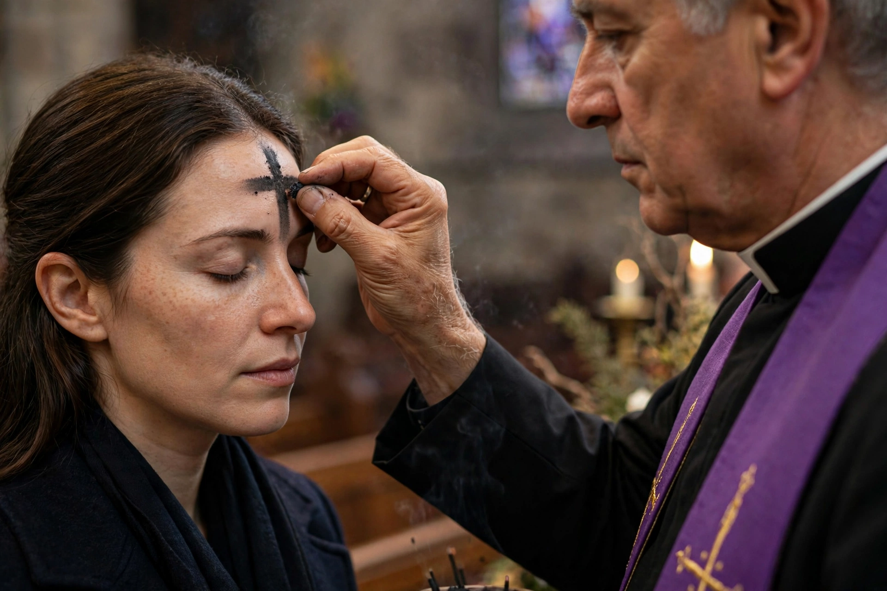

Ash Wednesday
| Ash Wednesday | |
|---|---|
 | |
| Observed by | Roman Catholics, Lutherans, Anglicans, Methodists, many other Western Christians |
| Type | Christian |
| Significance | First day of Lent; day of prayer, fasting and repentance |
| Date | 46 days before Easter Sunday |
| Related to | Lent, Shrove Tuesday (Mardi Gras), Easter |
Ash Wednesday is a holy day of prayer and fasting in many Western Christian denominations. It marks the first day of Lent, the season of forty days (not counting Sundays) of penitence and preparation before Easter, and falls 46 days before Easter Sunday. It follows Shrove Tuesday, the last day of Carnival or Mardi Gras.
Observance
The day takes its name from the practice of placing ashes on the foreheads of the faithful as a sign of mortality and repentance. The ashes are traditionally made by burning the palm branches from the previous year's Palm Sunday. As the priest or minister applies them in the form of a cross, they say, "Remember that you are dust, and to dust you shall return" (from Genesis 3:19) or "Repent, and believe in the Gospel."
In the Roman Catholic Church, Ash Wednesday is a day of fasting (one full meal and two smaller meals for those aged 18–59) and abstinence from meat, and attendance at Mass, while not a holy day of obligation, is common. Many Anglicans, Lutherans, Methodists and Presbyterians also observe the imposition of ashes; in recent years "ashes to go" ministries have offered them in public places.
History
The use of ashes as a sign of penance has biblical roots, and by the early Middle Ages the public penance of sinners began at the start of Lent. The custom of marking the whole congregation with ashes developed by about the eleventh century, and the day became fixed as the beginning of Lent as the Lenten fast was extended to forty days.
See also
This article is a recreation written from memory for the muse-webcrawl project.